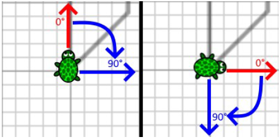

Die Schildkröte soll das Blütenblatt in Form einer Raute malen.
Die Schildkröte soll eine Blume malen. Die Blume besteht aus acht Blütenblättern. Jedes Blütenblatt hat die Form einer Raute.
Die Schildkröte soll eine Blume malen. Die Blume besteht aus 24 Blütenblättern. Jedes Blütenblatt hat die Form einer Raute.
Hinweis: Die Raute hat zwei 45°-Winkel und zwei 135°-Winkel. Alle vier Seiten der Raute sind 6 Schritte lang.
